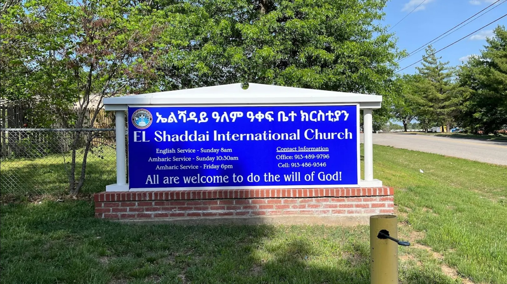

About ELIEC
Equipping leaders. Empowering communities. Glorifying Christ.
Our Mission
Our Mission As a clear and distinct voice proclaiming and demonstrating the goodness, saving grace and hope that is in Jesus Christ, our goal is to teach the uncompromised Word of God with simplicity so that it can be applied to our everyday lives in a practical and effective manner; thereby fulfilling our destiny and touching all those with whom we come in contact with - in due course leaving a permanent mark on our generation.
Who We Are
We are born again Christians in Shawnee Mission, Kansas with a mission of proclaiming the Gospel of Jesus Christ in word and deeds. We strive to make the good news of Jesus Christ known through worship, ministry, and outreach mission.
Our Values
- Word of God
- Prayer
- Worship
- Outreach